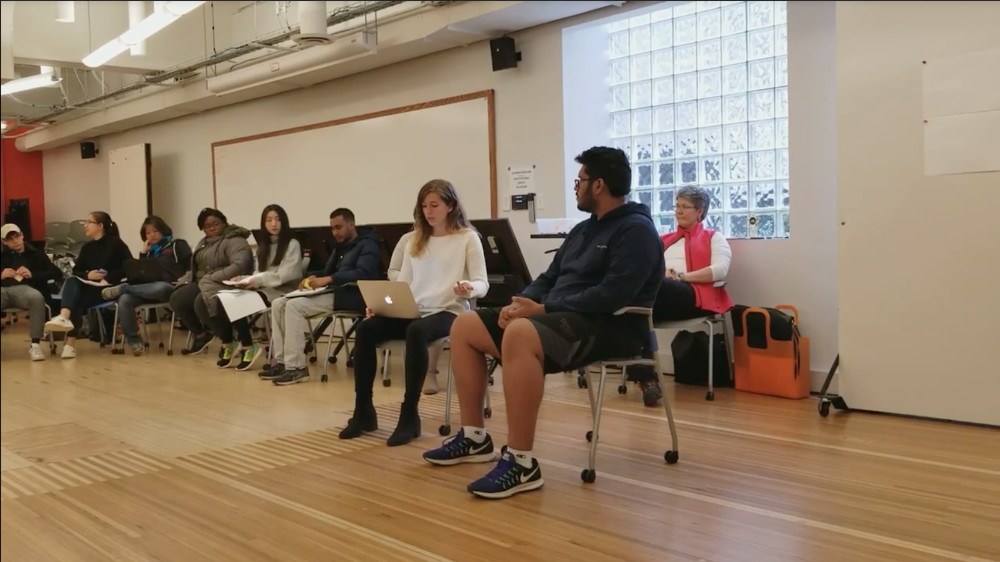
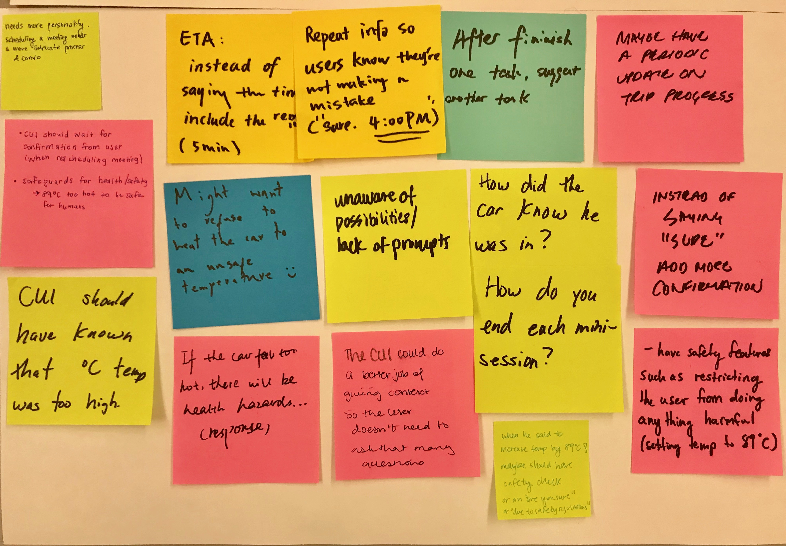

Context
The task was to design a conversational interface (e.g. Siri, Alexa) that would be integrated with a self driving car. The assignment was left very open-ended, and we had jurisdiction over specific users to target and areas to focus on.
Team
I was placed in an interdisciplinary team of four.
Skills
User stories, Ecosystem collection, Competitive analysis, Scenarios, User testing
User Stories
As a first step, we created user stories. This helped us focus in on our audience and narrow our vision for the final product.
As an owner of a driverless car...
I want to arrive at my destination on time.
I want to ensure that the car is not damaged.
I want to feel pride in my car.
I want to make sure my passengers are happy.
As a passenger in a driverless car...
I want to be aware of the route I am taking.
I want to be able to multitask but still feel safe.
As either a passenger or owner...
I want to be able to understand their environment (temperature, gas mileage, settings) easily.
I want to be comfortable at all times.
I want to be able to multitask but still feel safe.
Competitive Analysis
We conducted research on several existing CUI platforms and summarized our findings.
| Features |
Amazon Alexa |
Google Home |
Cortana |
Siri |
| Wake Command Word |
“Alexa, Echo, Amazon” |
“OK Google” |
“Hey Cortana” |
“Hey Siri" |
| Standalone Hardware Device |
Yes [Echo, Echo Dot, Echo Show, Echo Spot] |
Yes [Google Home, Google Home Mini] |
No [used on Windows 10 |
No [used on iPhone, iPad] |
| Music Streaming Platform |
Prime Music, Spotify, Pandora, TuneIn, iHeartRadio |
Google Music, Spotify, Pandora, TuneIn |
Groove Music library |
Apple Music Library |
| Strengths |
Many features/skills and synced services, adapts to each individual user |
Focuses on integrating with the home (creating a Smart Home), syncs very well with all Google services |
Wide range of skills, good organizational integration, uses ML to improve over time |
21 languages, availability (on all iPhones) |
| Weaknesses |
Few languages spoken, requires separate hardware |
Few skills, requires separate hardware |
Not popular among standard users (as opposed to business professionals) |
Fewer features, unreliable wake command |
Scenarios
We identified several different potential users, including those who own self driving vehicles and those who would be using this CUI through a ridesharing platform, as well as blind people, students, commuters, and senior citizens. Based on redundancies between use cases and personal interest, we decided to narrow our target audience to commuters who own their own vehicle.
Goal: As an employee at Duolingo with a very busy schedule of many ongoing projects, Joe wants to stay productive during his commute each day to work and stay on top of his work schedule.
Context: Joe lives an hour outside of the city and owns a driverless car to commute to work. He enjoys the fact that he doesn’t have to drive during his commute, but since he has a very busy schedule that is constantly changing, he finds it to be a hassle to constantly verify that he is going to get to work on time, updates to his work schedule, and even adjust the environment within the car. He is very comfortable with having devices connected to one another and wishes that he could verbally speak to an assistant so that he could quickly make updates to his schedule within constantly checking on his laptop.
Solution: By having a virtual assistant in the driverless car to speak to, Joe can easily have the conversational interface list out his agenda for the day, set meetings, email his co-workers, and tell updates about the status of his commute. Joe can then focus on his work and not have to worry about the logistics of his commute and work schedule.
Prototyping Session
After completing scenarios and determining the scope of the CUI, we had a prototyping session in which I played the CUI and another classmate (not on my team) played a user.
This enactment provided valuable feedback for us, especially about the types of user error our system would have to handle.

In-class prototyping session

Feedback we recieved from classmates
Revised Scenario
We took the feedback we received from the prototyping session into account, and revised our original scenario to be more specific and address the precise features we wanted to highlight.
Goal: During his commute to work, Joe wants to be able to get to work as fast as possible amid the busy LA traffic.
Context: Joe works at Universal Studios in Los Angeles. Since he is not a morning person, Joe often wakes up late and is in a rush to get to work on time. Since he works at the studios, sometimes on the way to work, his destination needs to change when his team decides to shoot in a new location at the last minute. Joe also then needs to coordinate with the rest of his team about the destination change and modify his schedule for the day accordingly.
Solution: Through quick interaction with a conversational user interface in the car, Joe can easily know the status of his commute, communicate with his team, and update his schedule. In the case of last-minute location changes, Joe will easily be notified by the CUI that there has been a location change, and Joe can update his destination so that the driverless car can quickly re-route to the new place. The CUI can provide updates on the status of his commute amidst traffic, road closures, changes in estimated times of arrival and/or destination, and the virtual assistant can also relay the information to his team if desired so that his team is also notified and can easily track his status. In addition, Joe can phone or text his co-workers quickly and coordinate his schedule for the rest of the day. Overall, with a driverless car and CUI, Joe can worry less about the logistics of his commute and schedule and focus more on his actual work.
Video Planning
The final deliverable for this project was a short product video. In planning for this, we created two conversation models, one for a user updating his or her schedule, and another for rerouting when changing a destination. This involved identifying the user utterance, the CUI response, and the characteristics of the CUI.
Once these models were established, we created a visual video script that detailed the concept, script, visuals, and transition for each shot.
ATLANTIS >
< UPARK
{kind=link}